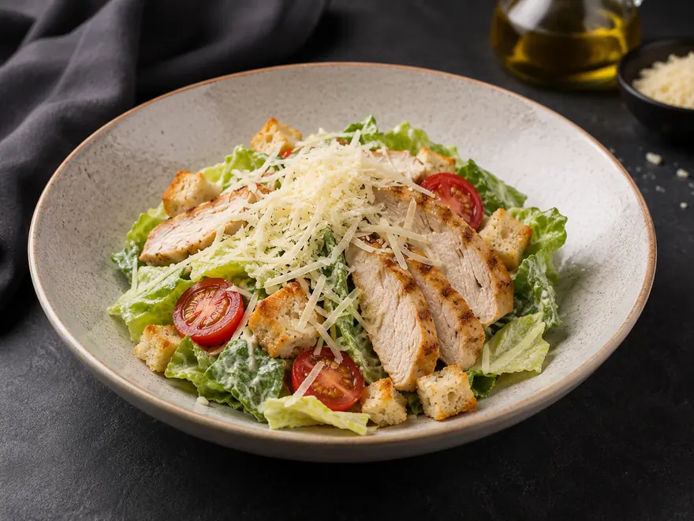
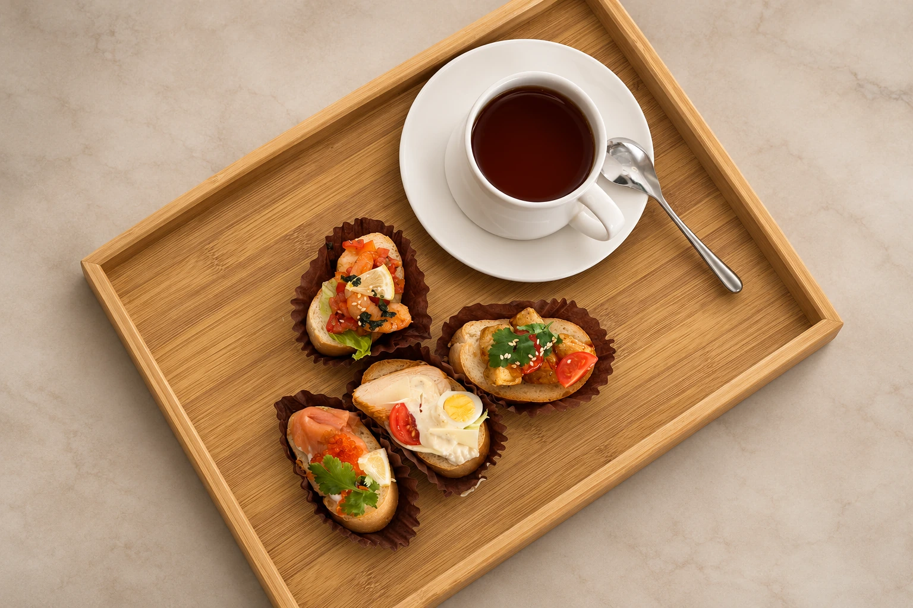
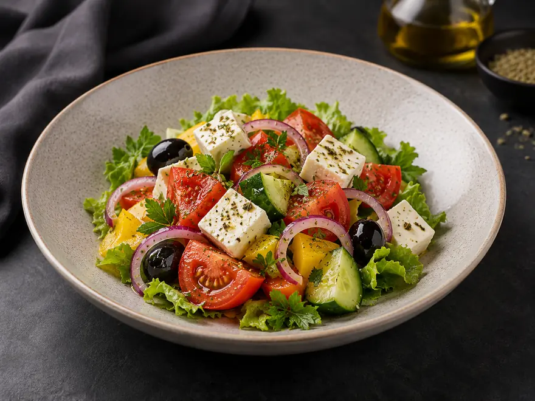
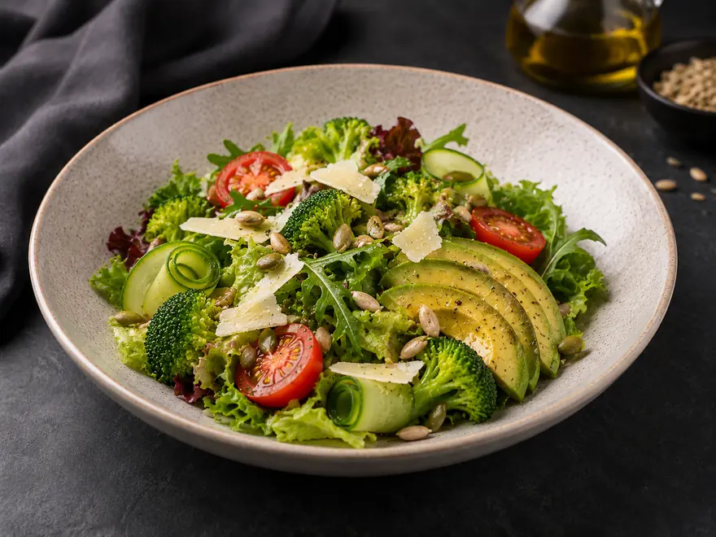
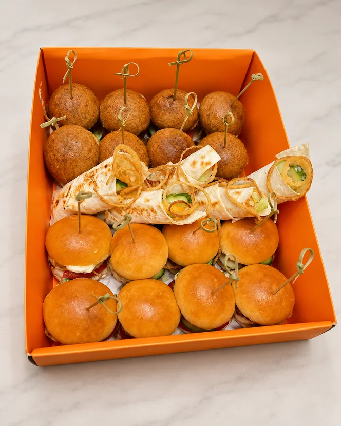
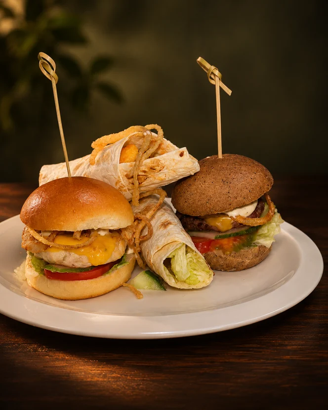
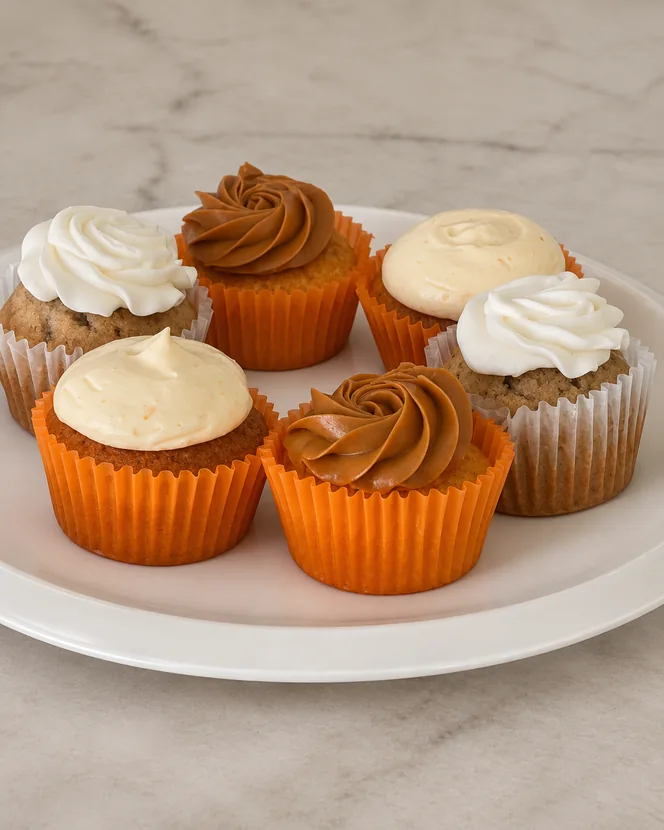

Цезарь с курицей
Салат айсберг, соус «Цезарь», перепелиное яйцо, черри, пармезан, сухари




Салат айсберг, соус «Цезарь», перепелиное яйцо, черри, пармезан, сухари

Огурец, помидор, сладкий перец, листья салата, оливковое масло, лимонный сок

Микс салата, авокадо, огурец, черри, брокколи, пармезан, семечки
Паста том-ям, креветки, лемонграсс, листья лайма, кокосовое молоко
Куриное мясо, лапша, морковь, лук
Чечевица, репчатый лук, морковь, сухари

С запечённым картофелем и грибами
Картофель в мундире, соус демиглас
Запечённый картофель в грибном соусе
Филе форели, картофельное пюре
Куриное филе, шпинат, сливки, черри, пармезан

Картофель фри и кетчуп
Картофель фри и кетчуп
Картофель фри и кетчуп
Картофель фри и кетчуп
Фетучини, куриное филе, шампиньоны и вешенки
Спагетти, мясной соус, говяжий фарш, морковь, сельдерей, томат
Острый томатный соус с базиликом
